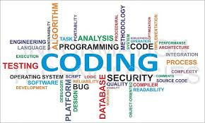

This is a paragraph.
This is another paragraph.
p는 단락을 나눌때 씀.
br태그보다 p태그를 쓰는 것이 좋다. 단락의 시작과 끝을 알 수 있기 떄문에.css을 쓰면 br태그를 여러번쓰지 않고도 단락을 나눌 수 있다. 시각적으로 부족한 부분은 css를 사용하면 된다.
검색엔진에 노출을 생각해봤을때 '제목처럼'(포인트를 키운다거나)하는 것보다 <<<<<<제목을 주는 태그(h1,2,3...)를 주는 것이 현명하다 말그대로 html태그를 의미에 맞게 쓰라는 것이다 그냥 보기에만 좋게 쓰는 것이 아니라
이미지를 웹페이지에 넣고 싶을 때 쓰는 태그는 img이다
 src는 source의 약자이다. 여기서 src와 width는 속성(attribute이다.)부모자식관계 태그 li(리스트 태그는 반드시 부모태그를 가지고 있다.)
ul(unordered list의 약자), ol(ordered list의 약자)(태그는 반드시 자식태그를 가지고 있다.)
다른 예제 리스트에 있는 숫자를 1번HTML을 지우고 CSS를 1번으로 하고 싶을 때 밑에 있는 숫자들도 다 바꿔줘야 하는 번거로움이 있다. 이럴 땐 숫자를 지우고 ol태그를 사용해보자 앞에 자동으로 숫자가 넘버링 된다.
(탭으로 들여쓰기 가능하다)
표를 만드는 table, tr, td 태그도 부모자식관계를 가진다